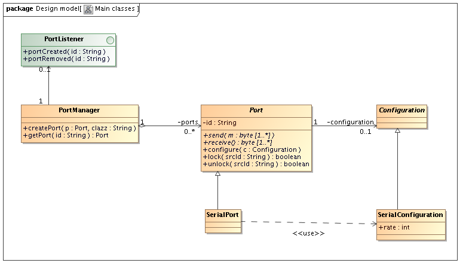
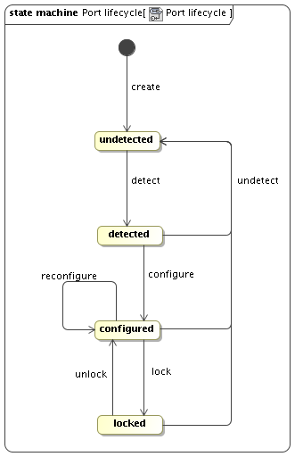
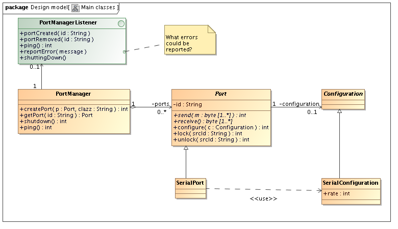
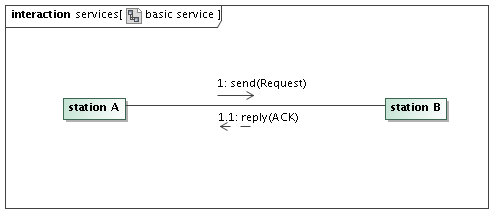
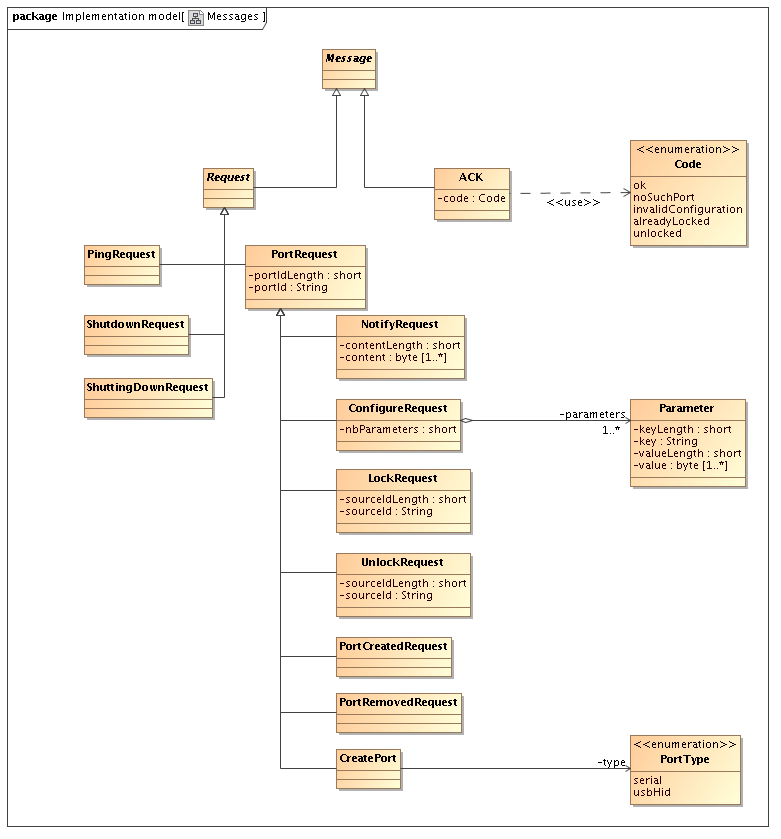
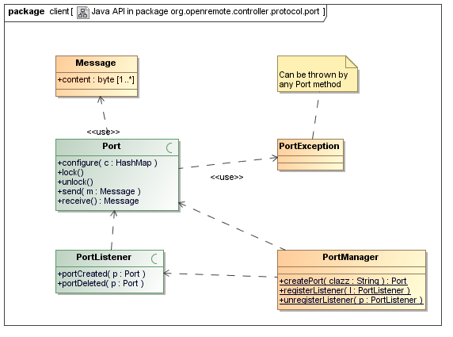

|
This page last changed on Sep 15, 2011 by ogandit.
Currently, the controller lets all its field bus drivers deal with controller hardware. This may cause many issues related to optimisation, robustness, concurrency and hardware management.
These issues could be addressed by developing a separate daemon in charge of handling controller ports and providing a unified interface to the controller.
The constraints are to support serial interfaces and later on, at least USB. It must run on Linux and Windows (The APR lib can help).
Enocean support development will give a chance to test this architecture.
After a first analysis, this port abstraction daemon (PAD) will have to implement the following model:

The PortManager class brings services to manage and detect hardware ports.
The abstract Port class represents a controller port, that can be serial or USB type or any other. The goal is to be able to use methods send and receive, but before the port must be detected and configured.with.
To each port instance a Configuration instance can be attached.
In this model, the port lifecycle would look like this:

This lifecycle allows a port to be detected by the OS or created by the controller. Then, once configured, it can be locked by a client in order to exchange data with.
|
Thanks for starting this. Will go my usual cycles to understand this so bear with me (we've been through this before).
Port/ConcretePort/Configuration/ConcreteConfiguration clear. Although this side will be in C, so no abstracts and extends there, right?
Am unclear on role of PortManager and PortListener.
In terms of use, I like to see it from the client side which in this case means the client protocol / RPC.
Configuration should be driven from tooling, passed through controller so would expect something like:
daemon:configure(Configuration, portID)
For data transfer (send):
daemon:send(bytes, portID)
Above doesn't address streaming (missing offset marks) but that could be for later milestones, maybe relevant in designing the protocol payloads though.
For receive, bidirectional connection would seem like a potential option, so:
client:receive(bytes, portId)
See comment above on streams.
For robustness/status, would need at minimum:
daemon:ping() client:pong()
Also, should be able to propagate errors back to controller:
client:error(portID, Error) [I like to see errors as typed objects, structs rather than just strings, makes it easier to add analysis tools]
and obviously for lifecycle maintenance:
daemon:shutdown()
Port management:
daemon:close(portID)
There's probably a few more things, but that's off the top of my head. Does the above make sense to you?

Posted by juha at Sep 15, 2011 22:25
|
|
Yes, the above makes sense to me.
The above model is just a design, regardless of implementation. But as implementation will be in C, this design model will have to be adapted in an implementation model.
As well, a protocol between the client (controller) and the server (daemon) will have to be defined. As you said, it will have to be bidirectional and event-based. As we consider the link between the client and the server as liable, we can use UDP.
Regarding the model, the PortManager is the main entry point of the daemon. It gives access to ports. It also is able to notify the client that the system created a port (for instance because someone plugged a USB stick). That's the role of the PortListener that is implemented by the client.
Regarding configuration, I would rather say : daemon:PortManager.getPort(id).configure(c), which is nearly the same as you.
Regarding streaming, the entry points can of course be added.
Regarding data reception, I would rather say that the call is : daemon:PortManager.getPort(id).receive(c), which will result in dequeuing the first message in the port reception queue, daemon-side or controller-side.
Regarding robustness, ping is a good idea, on both sides. Error reporting and shutdown as well.
Finally, closing a port does not make sense to me, unlocking seems more relevant.
I'm going to integrate all this in a next version of the model.
Posted by ogandit at Sep 19, 2011 20:26
|
|
Following our conversations, first an edit of the model:

I have added some of the requested services and status responses.
Regarding implementation, I start with the idea that a unique 'basic service' can support all the exchanges between the ORB and the daemon, on both directions:

In this service, the client sends a request and waits for an ACK from the server. If no ACK is received within a reasonable period, the client retries. If again no ACK is received, the client considers the server as dead. As soon as the ACK is received, the client can send another request.
Following diagram gathers all requests and ACKs:

The way messages are serialized is to be defined.
Posted by ogandit at Sep 21, 2011 21:21
|
|
Regarding message serialization, I have in mind two options:
1/ XML.
Pro : easy to set up, easy testing
Con : additional libs on bot sides, not a really embedded approach, need to uuencode/uudecode binary strings
2/ Homemade serialization like KNX/IP packets
Pro : embedded efficient approach
Con : Heavier development and tests
After thinking again about it, I would now favour a TCP socket as link between both sides because this would allow the daemon to know the IP and port of its client(s) for bidirectional communications without configuration.
Posted by ogandit at Sep 23, 2011 20:43
|
|
On #1:
I think XML is an overkill in this case.
Howver, there's a benefit in having the protocol easily accessible and readable for debugging, logging, analysis and testing scenarios. But we are not dealing with an arbitrary data structure (which XML handles well) but a well-defined and fixed one so much of the XML parsing is just an overhead.
Instead I would clearly specify a delimiter format to separate data fields and encoding/decoding semantics for data outside of the [a-zA-Z0-9] range where necessary.
This could be as simple as having a payload such as:
<DATA port ID, DATA len, DATA operation ID, DATA payload>
Which could translate as:
"Serial, 3, Send, 0x0F 0x0A 0x00"
In this case using a defined encoding/decoding from hex strings on the data payload to binary data, and using comma as delimiter on data fields. Constraining data fields port ID, len, operation ID as strings is also not difficult, plenty of library support for conversions between values in standard C lib.
I don't think the overhead of encoding the payload into strings in this case makes a difference. But you could leave the encoding mode as something that is configurable between the nodes, which could be then trivially be modified to use a binary encoding instead, if necessary.
I'd default for string encoding initially as it makes logging and diagnostics simple. I'd also default for TCP because of simplicity. If there's need to optimize later then UDP can be alternative.
So I wouldn't go as far as KNX/IP in option #2 (as it seems unnecessary to optimize that far, we're not limited to bus bandwidth) but wouldn't go silly with XML either.
Find a simple string encoding/decoding convention instead. Readable but trivial to parse.
Posted by juha at Sep 26, 2011 10:05
|
|
Sounds good.
I'll propose a format following these rules, ie homemade format with ASCII encoding for octet strings.
Posted by ogandit at Sep 26, 2011 10:38
|
|
Regarding reception, I suppose we need something like the client being able to register to receive either the message directly, either a notification so that it can dequeue the message, all this happening async without the need to implement any polling.
Posted by ebariaux at Sep 27, 2011 14:46
|
|
Good for a first step.
Please make sure that it is possible to enter ascii payloads as ascii for readability. Binary payloads is probably best encoded as hex.
I see two additional features that might be needed going forward.
I would also suggest that we need some kind of parametrisation of payloads. Consider the operation to set the volume. Often there is an operation for setting the volume with a certain value where the value is the parameter. Obviously one could create many operations for all possible values but it is not as convenient as parametrization and it have some limitations when used in combination with say sliders. If adding parameters there needs to be some options for choosing encoding apropriately (ascii, hex,).
Further, there is often a checksum. For static operations (with no parameters) they may be pre-calculated and made part of the payload. But this takes an extra effort for the configurator so it would be preferable if there was a selection of checksums (often vendor-specific) that could be added as an option to the operation.
Posted by toesterdahl at Sep 27, 2011 20:14
|
|
My wording was probably not correct.
I have no case of ASCII payloads, so I suggest all payloads are serialized with and hex encoding (for instance ABCD -> 41 42 43 44).
Regarding checksums, I know favour the use of TCP to have explicit connections. So calculating checksums is redundant unless we want a protocol that does not need to rely on a liable transport layer.
Posted by ogandit at Sep 28, 2011 08:56
|
|
Ok. I first thougth you were targeting a more general problem but now I see that you are dealing with one manufacturers set of sensors.
Posted by toesterdahl at Sep 28, 2011 20:00
|
|
Actually, I'm aiming at specifying a daemon that allows the ORB to access hardware ports (serial, USB or others) to interact with many field buses, not a specific set of sensors.
The communication with the ORB would use a TCP socket.
Once again, I see no case of ASCII payloads, but if you have any, we can add this feature.
Posted by ogandit at Sep 28, 2011 20:14
|
|
I think in this case it is just a question of readability at the very lowest level (the serialization format). When the payload is within ASCII range, should we encode it as ASCII rather than hex?
I've no firm opinion on this at the moment. I'm leaning towards single encoding (hex) on serialization for simplicity (see point on serialization vs API below). Hex is easy to translate but you still do need the translator somewhere to make it easier to read, so may lack convenience.
As for entering the ASCII payload, that should obviously be possible as ASCII where needed but this question is not part of the serialization format, but the API to read/write using it (i.e. where the hex-to-ascii translator would exist, where required). I think Torbjörn was asking about how to enter the payloads, so this would be different from the concern of serialization format you were talking about (API vs. serialization).
Posted by juha at Sep 29, 2011 16:25
|
|
Regarding message serialization, here is my proposal:
Message content:
Posted by ogandit at Oct 07, 2011 14:43
|
|
{noformat} and/or {code} work for monospace formatting
Posted by juha at Oct 09, 2011 15:37
|
|
Looks ok to me. SourceID was not clear to me. Is notify request content the data read from the port and sent back to controller?
At this point this is probably detailed enough. Additional details/requirements will be exposed by the implementation.
Torbjorn did you have any additional comments/requirements?
Posted by juha at Oct 09, 2011 15:52
|
|
So far so good.
I would be interested in some more analysis or examples around how to make use of the results in the panels but I understand if you defer from that for now.
Posted by toesterdahl at Oct 09, 2011 19:03
|
|
sourceId is the identifier of the entity wishing to lock a port. Its content is not clear to me either.
Posted by ogandit at Oct 09, 2011 20:21
|
|
Torbjörn, are you interested in being involved in this development? Or at least in code reviewing?
Posted by ogandit at Oct 13, 2011 21:37
|
|
I suggest the Java client API uses the PhysicalBus interface I have already designed to provide an abstraction of the physical ports.
To make more sense, I propose it is renamed Port interface.
Here is this API:

Posted by ogandit at Oct 31, 2011 15:40
|
|
{kind=link}
{kind=link}
{kind=link}
{kind=link}
{kind=link}
{kind=link}